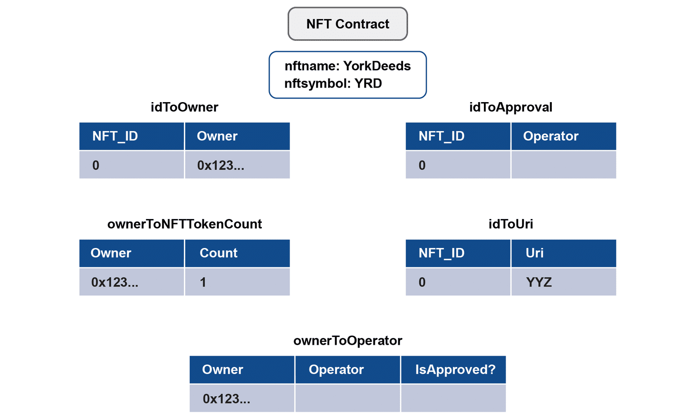
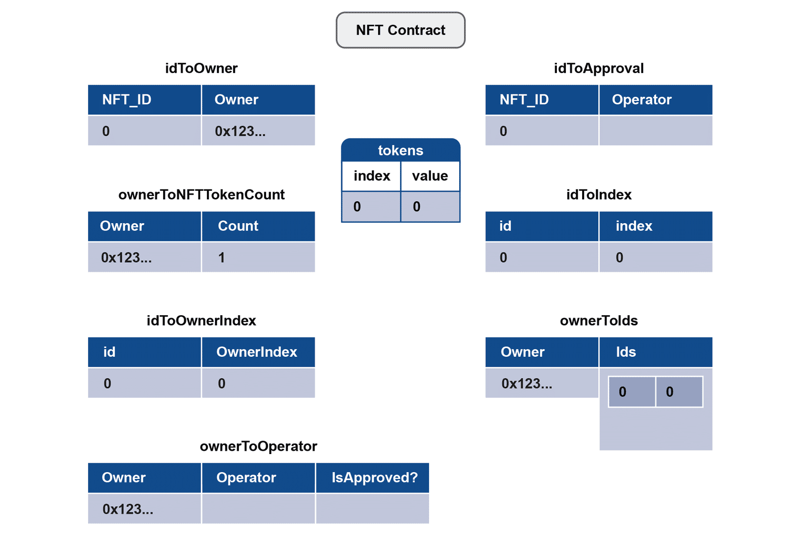

ERC20 Objectives
- Knowledge of popular ERC20 compliant tokens
- Understanding ERC20 standard
- Use case using ERC20 token
- Develop an ERC20 compliant token contract
ERC721 Objectives
- Knowledge of popular ERC721 compliant tokens
- Understanding ERC721 standard
- Use case using ERC721 token
- Develop an ERC721 compliant token contract
What's a token?
- Blockchains have a native coin/token that the chain is built with. These coins/tokens are required to execute transactions, send data, are rewards for mining, etc.
- But it may be possible to encode additional metadata in the chain which represents a token.
- Depending on the chain, this can be easy or hard.
Why use tokens?
- Say you want to issue share of stocks to the many co-founders (different percentages) for your new startup company that is yet to be registered
- In the Ethereum world, you can represent the shares in the form of “tokens” that can be sold, sold back to the company, transferred, etc.
- You can create a “token contract” and deploy it in Ethereum blockchain
- Then the tokens can be transferred, sold, etc.
EOS
- “Ethereum-killer” new Blockchain.
- Launched a year-long open ICO - basically a pre-sale.
- They will used the balances on the ERC20 as a starting balance on their own chain.
- “The EOS Tokens do not have any rights, uses, purpose, attributes, functionalities or features, express or implied, including, without limitation, any uses, purpose, attributes, functionalities or features on the EOS Platform.”
AUGUR
- Decentralized Prediction Market
- The REP ERC20 token is used as their internal currency for determining the truth.
- People ‘vote’ with their REP on what actually happened.
- Aside: Oracles are hard.
OMISEGO
- Payments Platform, decentralized exchange, etc.
- Supposedly cross-chain.
- White-label business tokens.
BAT - Basic Attention Token
- A token for paying web creators. Integrates with the Brave browser.
- Basically a use-constrained currency. Get paid to view ads, pay content producers, content producers sell tokens to advertisers.
- Classic disclaimer - “BAT is not a digital currency, it is a utility token.“
NFT Landscape : Publishers (Game)
- Cryptofighters
- Cryptokitties
- Decentraland
- Etherbots
- Ethermon
- Rare peppes
- Spells of Genesis
NFT Landscape : Publishers (Non-Game)
- Crafty
- Superrare
- Terra0
- Unico
NFT Landscape : Marketplaces
- OpenBazaar
- Opensea
- OpSkins
- Rarebits
NFT Landscape : Infrastructure
- Oxcert.org
- Bitcrystals
- Codex Protocol
- Counterparty
- Ethereum
- Fanbits
- Metamask
- Mokens
- Userfeeds
- Wax
- ZeppelinOS
ERC-20 standard
- ERC-20 is a standard developed after the release of ETH that defines how tokens are transferred and how to keep a consistent record of those transfers among tokens in the Ethereum Network
- Standard for transferring tokens and approving tokens to be spent by another on-chain contract
- Details in
ERC-20 tokens
- ERC20 is a “token standard” for creating Ethereum token contracts
- ERC stands for Ethereum Request for Comments
- Any token contract that adheres to the specification follows ERC20
- Can use with any wallets that understand ERC20
- Most ICOs (Initial Coin Offerings) have adhered to ERC20
ERC-20 Interface
interface IERC20 {
function name() public view returns (string memory);
function symbol() public view returns (string memory);
function decimals() public view returns (uint8);
function totalSupply() external view returns (uint256);
function balanceOf(address owner) external view returns (uint256 balance);
function transfer(address recipient, uint256 amount) external returns (bool success);
function transferFrom(address sender, address recipient, uint256 amount) external returns (bool success);
function approve(address spender, uint256 amount) external returns (bool success);
function allowance(address owner, address spender) external view returns (uint256 remaining);
event Transfer(address indexed sender, address indexed recipient, uint256 amount);
event Approval(address indexed owner, address indexed spender, uint256 amount);
}
ERC20 Mandatory functions
ERC20 Events
Events are only accessible by off-chain application; contracts do not have
access to events
Demo : Standard ERC20 Token Contract
DEMO : Initial Coin Offering using ERC20
Approve Attack vector
- If an account changes approval from 5 to 3, due to front running, the attacker can transfer 8 tokens
- Work around is to change approval from 5 to 0 first. If no attack, change to 2 later. Otherwise, leave approval at 0.
- The worse case in this approach is lose 5 tokens
- Openzeppelin uses decrease/increase as solution
ERC-721 standard
- A standard interface for non-fungible tokens, also known as deeds.
- Details in
ERC-721 tokens
- Provides basic functionality to track and transfer NFTs
- NFTs can represent ownership over digital or physical assets.
- NFTs are distinguishable and so the ownership of each one must be tracked separately
ERC-721 use-cases
- Physical property — houses, unique artwork
- Virtual collectables — unique pictures of kittens, collectable cards
- “Negative value” assets — loans, burdens and other responsibilities
ERC-721 Interface
interface ERC721 /* is ERC165 */ {
event Transfer(address indexed _from, address indexed _to, uint256 indexed _tokenId);
event Approval(address indexed _owner, address indexed _approved, uint256 indexed _tokenId);
event ApprovalForAll(address indexed _owner, address indexed _operator, bool _approved);
function balanceOf(address _owner) external view returns (uint256);
function ownerOf(uint256 _tokenId) external view returns (address);
function safeTransferFrom(address _from, address _to, uint256 _tokenId, bytes data) external payable;
function safeTransferFrom(address _from, address _to, uint256 _tokenId) external payable;
function transferFrom(address _from, address _to, uint256 _tokenId) external payable;
function approve(address _approved, uint256 _tokenId) external payable;
function setApprovalForAll(address _operator, bool _approved) external;
function getApproved(uint256 _tokenId) external view returns (address);
function isApprovedForAll(address _owner, address _operator) external view returns (bool);
}
interface ERC165 {
function supportsInterface(bytes4 interfaceID) external view returns (bool);
}
ERC721 Required Interface
ERC721 Contract with Metadata

ERC721 Contract with Enumerable

Demo : Standard ERC721 Token Contract